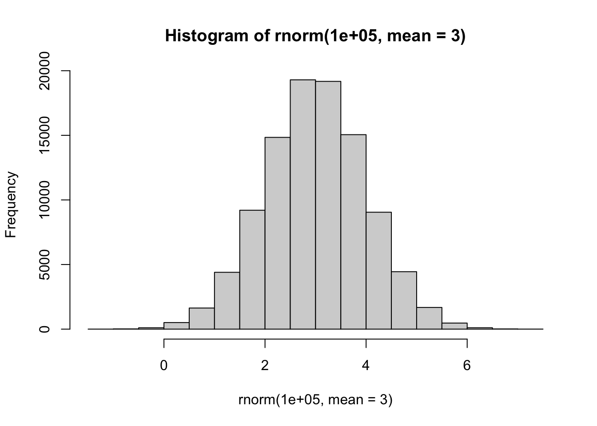
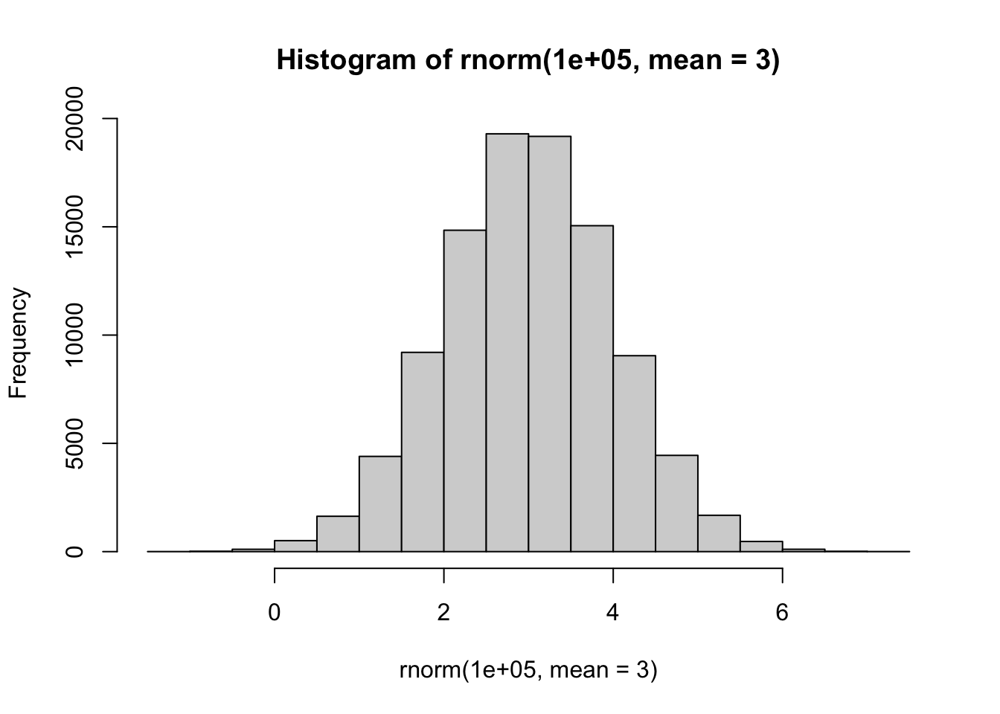
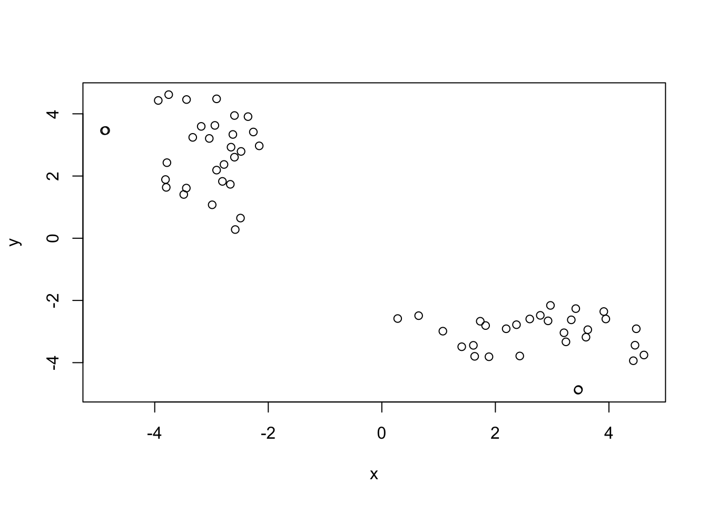
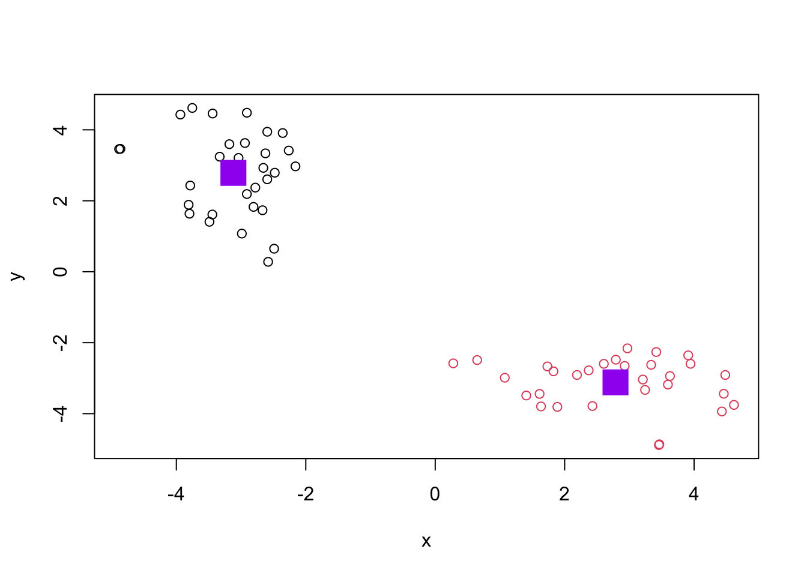
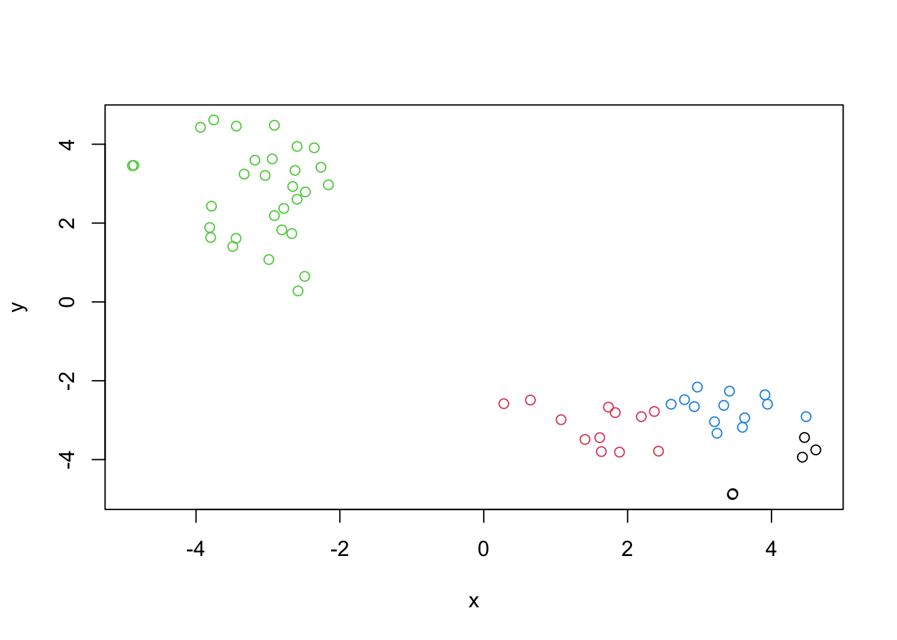
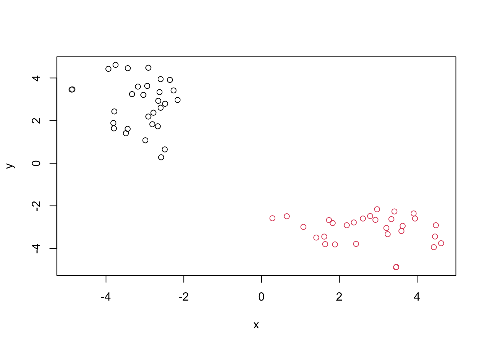
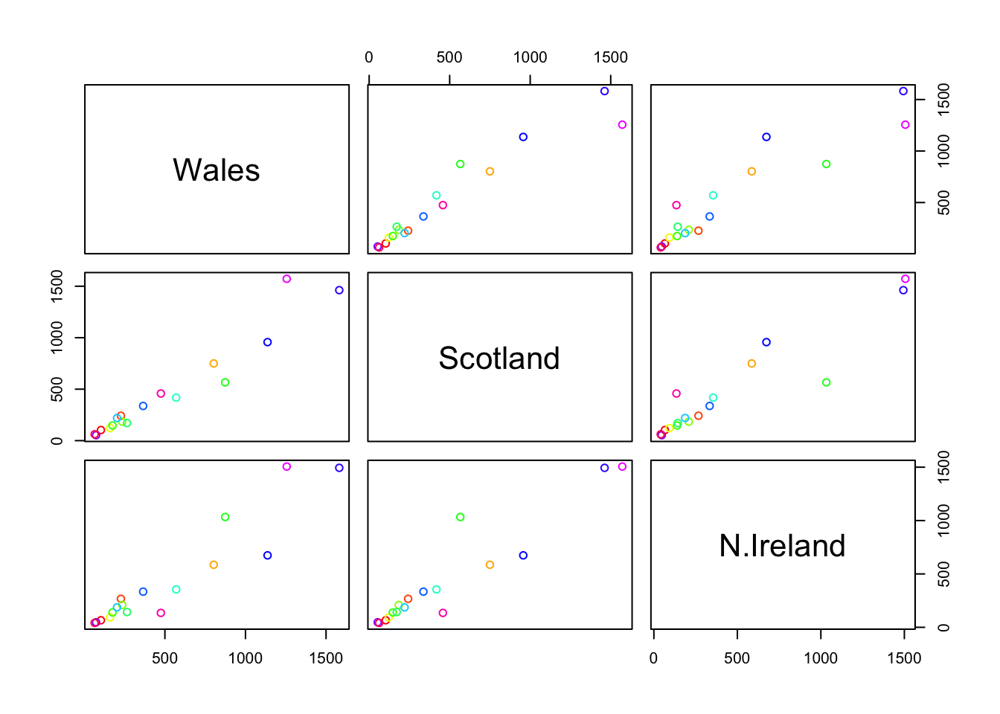
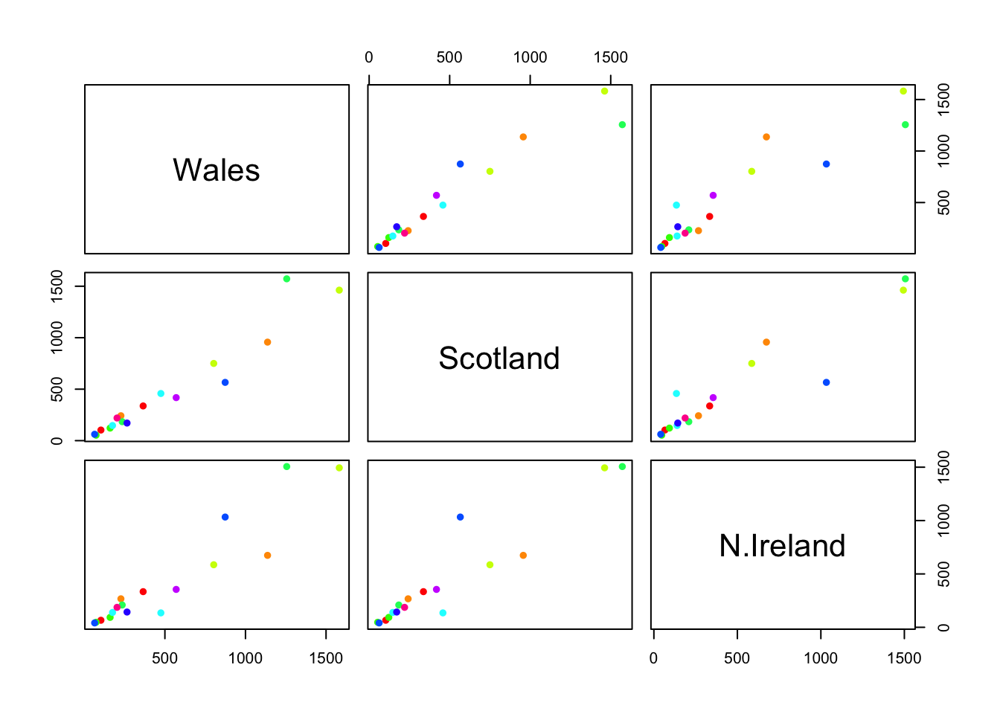
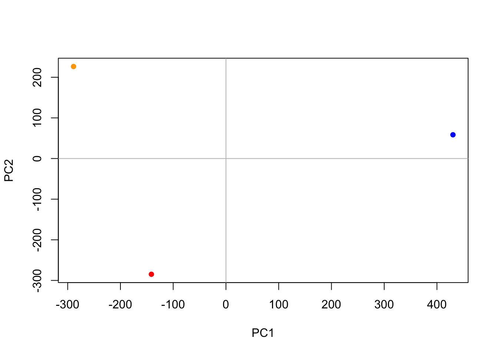

# Make up some data
hist(rnorm(100000, mean = 3))
Today we will start our multi-part exploration of some key machine learning methods. We will begin with clusetering - finding groupings in data, and then dimensionallity reduction.
Let’s start with “k-means” cluster The main function in base R for this kmeans().
# Make up some data
hist(rnorm(100000, mean = 3))
tmp <- c(rnorm(30, -3), rnorm(30, +3))
x <- cbind(x=tmp, y=rev(tmp))
plot(x)
Now let’s try out kmeans()
km <- kmeans(x, centers=2)
kmK-means clustering with 2 clusters of sizes 30, 30
Cluster means:
x y
1 -3.118677 2.785936
2 2.785936 -3.118677
Clustering vector:
[1] 1 1 1 1 1 1 1 1 1 1 1 1 1 1 1 1 1 1 1 1 1 1 1 1 1 1 1 1 1 1 2 2 2 2 2 2 2 2
[39] 2 2 2 2 2 2 2 2 2 2 2 2 2 2 2 2 2 2 2 2 2 2
Within cluster sum of squares by cluster:
[1] 53.55544 53.55544
(between_SS / total_SS = 90.7 %)
Available components:
[1] "cluster" "centers" "totss" "withinss" "tot.withinss"
[6] "betweenss" "size" "iter" "ifault" attributes(km)$names
[1] "cluster" "centers" "totss" "withinss" "tot.withinss"
[6] "betweenss" "size" "iter" "ifault"
$class
[1] "kmeans"Q. How many points in each cluster?
km$size[1] 30 30Q. What component of your result object details cluster assignment/membership?
km$cluster [1] 1 1 1 1 1 1 1 1 1 1 1 1 1 1 1 1 1 1 1 1 1 1 1 1 1 1 1 1 1 1 2 2 2 2 2 2 2 2
[39] 2 2 2 2 2 2 2 2 2 2 2 2 2 2 2 2 2 2 2 2 2 2Q. What are centers/mean values of each cluster?
km$centers x y
1 -3.118677 2.785936
2 2.785936 -3.118677Q. Make a plot of your data showing your clustering results.
plot(x, col=km$cluster)
points(km$centers, col="purple", pch=15, cex=3)
Q. Run
kmeans()again and cluster in 4 groups and plot the results.
km4 <- kmeans(x, centers=4)
plot(x, col=km4$cluster)
This form of clustering aims to reveal the structure in your data by progressively grouping points into a ever smaller number of clusters.
The main function in base R for this is called hclust(). This function does not take our input data directly but wants a “distance matrix” that details how (dis)similar all our input points are to each other.
hc <- hclust( dist(x) )
hc
Call:
hclust(d = dist(x))
Cluster method : complete
Distance : euclidean
Number of objects: 60 The print out above is not very useful (unlike that from kmeans) but there is a useful plot() method.
plot(hc)
abline(h=10, col="red")
To get my main result (my cluster membership vector) I need to “cut” my tree using the function cutree()
grps <- cutree(hc, h=10)
grps [1] 1 1 1 1 1 1 1 1 1 1 1 1 1 1 1 1 1 1 1 1 1 1 1 1 1 1 1 1 1 1 2 2 2 2 2 2 2 2
[39] 2 2 2 2 2 2 2 2 2 2 2 2 2 2 2 2 2 2 2 2 2 2plot(x, col=grps)
plot(x, col=cutree(hc, h=6))The goal of PCA is to reduce the dimensionality of a dataset down to some smaller subset of new variables (called PCs) that are useful bases for further analysis, like visualization, clustering, etc.
url <- "https://tinyurl.com/UK-foods"
x <- read.csv(url, row.names=1)
x England Wales Scotland N.Ireland
Cheese 105 103 103 66
Carcass_meat 245 227 242 267
Other_meat 685 803 750 586
Fish 147 160 122 93
Fats_and_oils 193 235 184 209
Sugars 156 175 147 139
Fresh_potatoes 720 874 566 1033
Fresh_Veg 253 265 171 143
Other_Veg 488 570 418 355
Processed_potatoes 198 203 220 187
Processed_Veg 360 365 337 334
Fresh_fruit 1102 1137 957 674
Cereals 1472 1582 1462 1494
Beverages 57 73 53 47
Soft_drinks 1374 1256 1572 1506
Alcoholic_drinks 375 475 458 135
Confectionery 54 64 62 41Q1. How many rows and columns are in your new data frame named x? What R functions could you use to answer this questions?
dim(x)[1] 17 4rownames(x) <- x[,1]
x <- x[,-1]
head(x) Wales Scotland N.Ireland
105 103 103 66
245 227 242 267
685 803 750 586
147 160 122 93
193 235 184 209
156 175 147 139head(x) Wales Scotland N.Ireland
105 103 103 66
245 227 242 267
685 803 750 586
147 160 122 93
193 235 184 209
156 175 147 139Q2. Which approach to solving the ‘row-names problem’ mentioned above do you prefer and why? Is one approach more robust than another under certain circumstances?
I prefer using x <- read.csv(url, row.names=1) because it looks cleaner to have the column removed while it’s being read. Using the “rownames()” approach will remove the first unamed column each time, so it could lead to issues when analyzing data.
Q3: Changing what optional argument in the below barplot() function results in the following plot?
barplot(as.matrix(x), beside=T, col=rainbow(nrow(x)))
barplot(as.matrix(x), col=rainbow(nrow(x)))
The so-called “pairs” plot can be useful for small datasets:
pairs(x, col=rainbow(nrow(x)))
Q5: Generating all pairwise plots may help somewhat. Can you make sense of the following code and resulting figure? What does it mean if a given point lies on the diagonal for a given plot?
pairs(x, col=rainbow(10), pch=16)
If a point lies on the diagonal line for a given plot, then the points have identical values.
Q6. What is the main differences between N. Ireland and the other countries of the UK in terms of this data-set?
They do not follow the diaganol line as much as the other countries of the UK.
So the pairs plot is useful for small datasets but it can be lots of work to intercept and gets untraceable for larger datasets.
So PCA to the rescue…
The main function to do PCA in base R is called prcomp(). This function wants the transpose of our data in this case.
pca <- prcomp(t(x))
summary(pca)Importance of components:
PC1 PC2 PC3
Standard deviation 379.8991 260.5533 1.459e-13
Proportion of Variance 0.6801 0.3199 0.000e+00
Cumulative Proportion 0.6801 1.0000 1.000e+00attributes(pca)$names
[1] "sdev" "rotation" "center" "scale" "x"
$class
[1] "prcomp"pca$x PC1 PC2 PC3
Wales -288.9534 226.36855 1.348366e-14
Scotland -141.3603 -284.81172 4.627961e-13
N.Ireland 430.3137 58.44317 -1.280793e-13A major PCA result viz is called a “PCA plot” (aka a score plot, biplot, PC1 vs PC2 plot, ordination plot)
Q7. Complete the code to generate a plot of PC1 vs PC2.
Q8. Customize your plot so that the colors of the country names match the colors in our UK and Ireland map and table at start of this document.
# Plot PC1 vs PC2
mycols <- c("orange", "red", "blue", "darkgreen")
plot(pca$x[,1], pca$x[,2], col=mycols, pch=16,
xlab="PC1", ylab="PC2")
abline(h=0, col="gray")
abline(v=0, col="gray")
Another important output from PCA is called “loadings” vector or the “rotation” componenet - this tells us how much the original variables (the foods in this case) contribute to the new PCs.
pca$rotation PC1 PC2 PC3
105 -0.05515951 -0.015926208 -0.114785683
245 0.05228588 -0.014247351 0.090388866
685 -0.29754711 0.017770827 -0.140679146
147 -0.08127351 0.050871661 -0.032506892
193 -0.01378426 0.095789177 -0.088241699
156 -0.03995614 0.043238659 0.060855246
720 0.38787509 0.714518360 -0.199098947
253 -0.13584223 0.144666425 -0.055102719
488 -0.24608178 0.226299860 -0.251953979
198 -0.03217825 -0.042547197 -0.091526858
360 -0.03250215 0.045390849 0.138275463
1102 -0.60208698 0.178285653 0.105684388
1472 -0.07242201 0.213840430 -0.673357649
57 -0.02896604 0.030761774 0.005505441
1374 0.21794320 -0.555250465 -0.560188267
375 -0.49854565 -0.110688746 -0.184979763
54 -0.03330887 -0.005704759 0.004859328PCA looks to be a souper useful method for gaining some insight into high dimensional data that is difficult to examine in other ways.